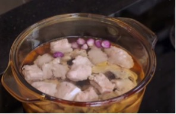
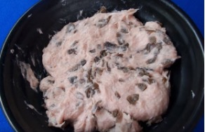

Ingredients
- 1kg bone marrow
- 1/2kg pork ribs
- 300g lean pork
- 3 dried wood ear mushrooms
- 4 shallots
- Fresh cilantro and green onions
- Pork sausage
- Rice noodles
- Seasonings: salt, pepper, fermented shrimp paste, fish sauce, and seasoning powder
Instructions
Prepare the Ingredients:
- Rinse the bone marrow and cut it into bite-sized pieces. Then, blanch the bones in boiling water to remove any impurities.
- Note: Add 1 teaspoon of salt to the boiling water for blanching.
For the pork ribs, blanch them in boiling water the same way as the bone marrow.
- After blanching the bone marrow and pork ribs, rinse them with cold water and let them drain.
- Cut the lean pork into thin slices. Peel 3 shallots and finely chop the rest.
- Soak the wood ear mushrooms in cold water until fully expanded, drain, and chop them into small pieces. To reduce the musty odor, rub the mushrooms with salt before rinsing.
- Chop the cilantro and green onions into small pieces. Slice the pork sausage into bite-sized pieces.
Prepare the Broth:
- Place the bone marrow and pork ribs into a pot with about 1.5 liters of cold water and bring it to a boil. Remember to add 3 shallots to the pot to enhance the flavor of the broth.
- Once the water starts boiling, reduce the heat to low and simmer for 1 hour. During the simmering process, you can skim off the foam to make the broth clearer.
- Season the broth with 1 teaspoon of salt and 1 teaspoon of seasoning powder.

Prepare the Meatballs:
- Add the minced shallots and all the ground meat into a mortar and pound until finely ground. Once the meat is thoroughly pounded, season with ¼ teaspoon of salt, ½ teaspoon of seasoning powder, and ½ teaspoon of pepper.
- Continue pounding to ensure the seasoning is evenly mixed into the meat. Transfer the finely ground meat to a bowl and mix it with the soaked and chopped wood ear mushrooms, then stir well.
- Use 2 teaspoons to shape the meatballs into round forms, or you can shape them directly with your hands. Once the meatballs are formed, drop them into the simmering broth.
- Finally, season the broth with 1 tablespoon of fish sauce and quickly turn off the heat. The fish sauce will enhance the fragrance and richness of the broth.

Serve and enjoy the dish!
- Place the noodles into a bowl, add 2 slices of Vietnamese pork sausage (chả lụa), then pour the broth into the bowl along with the spare ribs and meatballs.
- Finally, sprinkle chopped herbs on top and enjoy with fresh vegetables, adding fermented shrimp paste (mắm tôm) to taste.